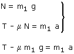
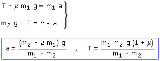

Si el problema no da los datos de la polea se sobreentiende que su masa es despreciable. En este caso no se cuenta con la rotación de la polea y solo se estudia la traslación de los bloques
La polea girará en el sentido de las agujas del reloj
El bloque 2 bajará y el bloque 1 se moverá hacia la derecha, ambos con la misma aceleración (Módulo).
 |
 |
 |
Combinando las ecuaciones obtenidas resulta un sistema de incógnitas: T, a

Si la aceleración fuera negativa significaría que el rozamiento del bloque 1 impide el movimiento